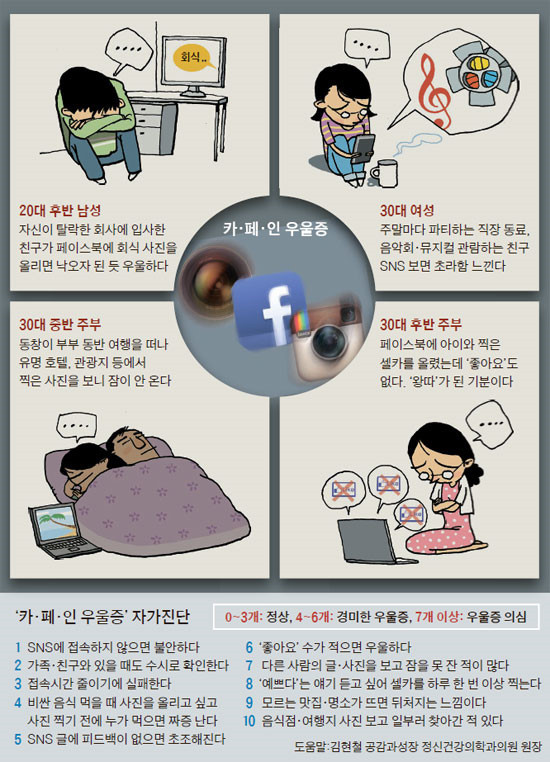

한국의 청년 고용 시장은 장기적인 어려움을 겪고 있습니다. 기사에 따르면, 지속적으로 실업 문제가 심해지고 있습니다.
대졸 청년의 취업률이 OECD 국가 중 최하위권으로, 젊은 고급 인재들의 취업 미달은 국가적인 문제가 되고 있습니다. 수많은 사람들이 취업 문제로 인해 우울을 겪고 있습니다. 당신만이 겪는 문제가 아닙니다. 기사
실업과 우울
SNS 사용이 일상화되면서, 이는 많은 젊은이들에게 우울감과 열등감을 초래하고 있습니다. 기사에 따르면, SNS 사용 시간과 우울증 발병 확률 간에 큰 상관관계가 있다고 합니다.
SNS 이용자 대부분은 자신의 솔직하거나 우울한 모습보다는 긍정적이고 멋진 모습만을 보여주고자 합니다. 자세한 내용은 이곳에서 확인하세요.
